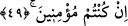

Çocuklar gibi tatlı peşinde koşan ise aşağıya iner.
İnsanı melekler gibi yapan ruhânî kuvvet, ancak nefsin arzularına karşı sabretmekle
hâsıl olur. Bu konuda Îsâ (a.s.)’ın hâline bak. İbret olarak yeter. Dünya metâından ve iki
dünyadan alâkayı kesmeye muvaffak kılan ancak Allah’dır.
48. (Melekler, Meryem’e hitaben Îsâ hakkında sözlerine devam ettiler:) Allah ona
yazmayı, hikmeti, Tevrât’ı ve İncil’i öğretecek.
“Ona yazmayı, hikmeti, Tevrât’ı ve İncil’i öğretecek” Yani, kalemle yazmayı, vahy
ve ilham yoluyla öğretecek. Îsâ (a.s.), yaşadığı dönemde insanların en güzel yazanı idi.
Hikmeti öğretecek; yani aklî ilimleri, şerîat ilimlerini ve ahlâkı güzelleştirmeyi
öğretecek. Çünkü insanın kemâli, hakkı bizzat bilmekte; hayrı da onunla amel etmek için
öğrenmektedir. Bu ikisinin toplamına “hikmet” denilir. Tevrât’ı ve İncil’i öğretecek,
yani onları kalbine yerleştirecek. Bu ve bundan sonra söylenenler, Meryem’i, kocası
olmaksızın doğurması üzerine kınayacakların kınamasından hâsıl olacak üzüntüleri
gidermek ve gönlünü hoş tutmak içindir.
49. O, İsrâiloğulları’na bir elçi olacak (ve onlara şöyle diyecek:) Size Rabbinizden
bir mûcize getirdim: Size çamurdan bir kuş sûreti yapar, ona üflerim ve Allah’ın
izni ile o kuş oluverir. Yine Allah’ın izni ile körü ve alacalıyı iyileştirir, ölüleri
diriltirim. Ayrıca evlerinizde ne yeyip ne biriktirdiğinizi size haber veririm. Eğer
inanan kimseler iseniz, bunda sizin için bir ibret vardır.
“O’nu İsrâiloğulları’na peygamber olarak gönderecek.” Yani onlara konuşacak.
Yahûdîlerden bazıları şöyle demişlerdir: Îsâ (a.s.) belirli bir kavme peygamber olarak
gönderilmiştir. İsrâiloğulları’ndan ilk peygamber Yûsuf, sonuncusu ise Îsâ (a.s.) dır.
Îsâ (a.s.) onlara şöyle diyecektir: “Hakikat, ben size rabbınızdan bir âyet getirdim.”
Bu âyet, Îsâ (a.s)’ın biraz sonra söyleyeceği; kuşu yaratma ve diğer mûcizelerdir. Hz.